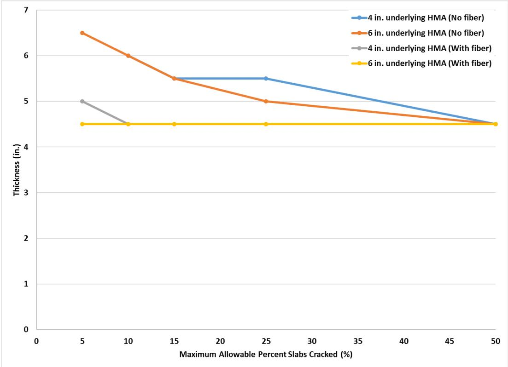
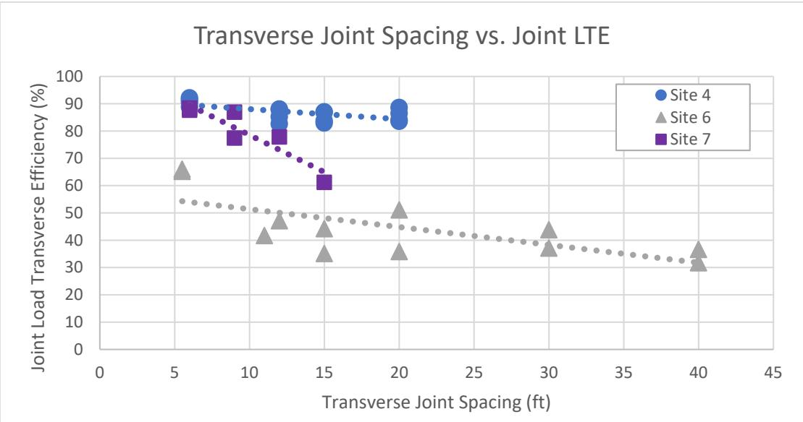
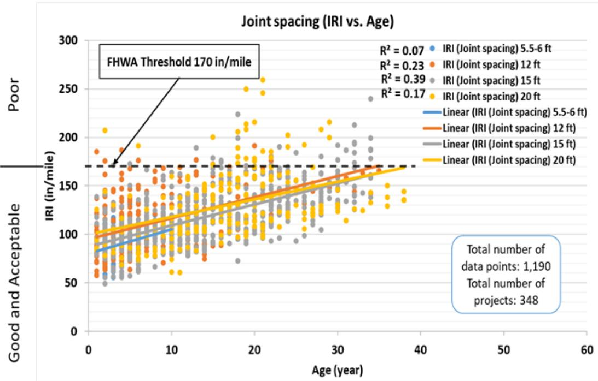

Joint Spacing Effects on Performance
Joint spacing is defined as the transverse distance between adjacent contraction joints in a concrete overlay, serving as a primary design parameter that governs pavement performance by determining slab dimensions and structural behavior. This geometric configuration controls the development of tensile stresses induced by shrinkage and temperature gradients, thereby dictating the extent to which slabs curl or warp under environmental loading conditions [1] [2] [3]. The spacing interval directly influences load transfer efficiency across the pavement surface, as wider gaps reduce the frequency of load paths and can lead to excessive joint opening that diminishes aggregate interlock [5]. Designers must balance the economic benefits of reduced joint installation against the mechanical risks of increased mid-panel cracking and surface roughness, often utilizing dimensionless indicators such as the slab-length-to-relative-stiffness ratio to optimize this trade-off [1] [3].
Sources (6)
Key findings
- Measured curling and warping indicators on county roads and city streets and found that increasing transverse joint spacing materially raised curvature IRI, deflection, and overall deformation, with 15-ft spacings producing the highest average values [2].
- Concluded that overly wide joint spacings (e.g., 15 ft) on thin overlays (5 in) caused corner cracking due to curling and warping, while increasing overlay thickness or reducing spacing significantly reduced these distresses [6].
- Evaluated panel sizes of 4.5 ft, 6 ft, and 9 ft and found that joint spacing had little to no effect on faulting, load-transfer efficiency, IRI, or ride quality over the first 3.5 years of service [4].
- Demonstrated that designing joint spacing to maintain a slab-length-to-relative-stiffness ratio (L/ℓ) between 4 and 7 provided the optimal balance between prompt joint activation and overall overlay performance [3].
- Reported that matching existing pavement joints was preferred over installing new expansion or isolation joints, as the latter were prone to higher maintenance costs [6].
Joint Spacing Effects On Performance
Joint spacing defines the distance between contraction joints in concrete overlays, establishing slab dimensions that govern structural behavior under environmental and traffic loads [3] [5]. The length of these slabs directly influences their susceptibility to curling and warping caused by temperature and moisture gradients, as well as the development of tensile stresses from shrinkage [1] [2] [3]. Designers balance the cost benefits of fewer joints against the performance risks of increased mid-panel cracking and roughness by optimizing spacing relative to slab stiffness [1] [3].
The figure below illustrates how varying joint spacing impacts the predicted overlay thickness and cracking performance.
 Predicted concrete overlay thickness versus maximum allowable percentage of cracked slabs for various underlying HMA configurations. [3]
Predicted concrete overlay thickness versus maximum allowable percentage of cracked slabs for various underlying HMA configurations. [3]
The figure plots the relationship between the recommended concrete overlay thickness and the maximum allowable percentage of cracked slabs for different structural designs.
Research problem — Research must determine how transverse joint spacing governs the long-term stability of thin concrete overlays by balancing load-transfer efficiency against the risk of premature distress such as faulting, cracking, and debris accumulation [4]. There is a need to identify optimal spacing criteria that prevent excessive curling and warping caused by temperature gradients while ensuring timely joint activation to maintain smoothness and structural durability [2] [3]. Studies aim to resolve the design challenge of selecting spacing that avoids the performance degradation associated with overly wide panels, such as mid-slab cracking and poor ride quality, without incurring unnecessary maintenance costs from excessive joint density [1] [5] [6].
The figure below illustrates how this balance is achieved by showing the relationship between 15-foot joint spacing and the predicted performance outcomes.

Predicted concrete overlay thickness versus maximum allowable percentage of cracked slabs for various underlying HMA conditions. [3]The figure plots the relationship between the required concrete overlay thickness and the maximum allowable percentage of cracked slabs for a fixed joint spacing configuration. It compares four scenarios based on underlying HMA conditions, showing that thicker existing asphalt layers generally require less concrete overlay thickness to maintain the same cracking performance limits. The data illustrates how structural design parameters interact with distress criteria, providing a basis for evaluating the trade-offs involved in selecting joint spacing intervals.
State of the art — Field evidence indicates that tighter transverse joint spacing generally yields better ride quality and load-transfer efficiency, whereas wider spacings can lead to faster performance declines unless mitigated by increased slab thickness or fiber reinforcement [1] [5]. The state of the art combines established spacing guidelines with mechanistic-empirical design tools and advanced nondestructive testing methods to optimize joint layout for long-term performance [1] [3] [5].
The figure below illustrates the relationship between transverse joint spacing and load transfer efficiency across specific field sites.

Transverse joint spacing versus joint LTE at Sites 4, 6, and 7 [5]The figure plots Joint Load Transverse Efficiency (%) against Transverse Joint Spacing (ft) for three distinct test sites. Each site demonstrates a trend of decreasing joint LTE with increasing joint spacing, although the magnitude and significance of this decline vary by location.
Findings from the reports
- Shorter transverse joint spacings (approximately 5.5–6 ft) consistently produced higher load-transfer efficiency and strain values compared to wider spacings, with differences that were statistically significant [1] [3] [5].
- Wider joint spacing increased predicted cracking and faulting, particularly in thin, unreinforced slabs, whereas tighter spacings reduced these distresses and extended service life [1] [5].
- Joint spacing was identified as a primary determinant of concrete overlay performance, with designers advised to size transverse joints to roughly one-third the slab thickness to enhance final performance [4] [6].
- Curvature-related roughness increased for shorter (5.5–6 ft) joint spacings compared to wider intervals, although overall International Roughness Index values remained insensitive to spacing changes [2] [5].
- Shorter transverse joint spacings produced lower curling and warping metrics, including curvature IRI and deflection, indicating improved performance for county roads and city streets [2].
- The slab-length-to-relative-stiffness ratio (L/l) proved to be a reliable predictor of joint activation behavior, with an optimal target range between 4 and 7 balancing timely activation and overlay performance [3].
- Excessively wide joint spacing led to construction difficulties such as misaligned dowel bars in unbonded overlays, while intermediate joints improved load transfer through greater aggregate interlock [6].
- In some specific field evaluations, joint spacing had essentially no measurable impact on pavement performance indicators such as faulting, load-transfer efficiency, and ride quality over the first several years of service [4].
Novelty & rigor — Research has introduced novel approaches to isolating joint spacing effects by employing controlled field experiments with systematically varied panel sizes and integrating mechanistic-empirical modeling with nondestructive ultrasonic tomography to observe joint activation [3] [4]. Distinctive methodologies include the creation of statewide performance databases linking historic records to condition data and the development of automated analytical pipelines that quantify curling and warping metrics through high-speed profilometry [1] [2]. Reproducibility is supported by detailed protocols for constructing test sections with specific fiber reinforcements and overlay thicknesses, alongside standardized procedures for collecting seasonal performance data using inertial profilers and falling-weight deflectometers [2] [5].
The following figure illustrates the specific 5.5- to 6-foot joint spacing configuration analyzed in these studies.
 Pie chart showing the percentage of joints activated for a specific joint spacing interval. [3]
Pie chart showing the percentage of joints activated for a specific joint spacing interval. [3]
The results demonstrate that longer joint spacing did not lead to increased joint activation, a finding attributed in the source text to a limited sample size.
Reported values
| Parameter | Value | Context | Source |
|---|---|---|---|
| curvature IRI range | 33.9 to 58.9 in./mile | county roads and city streets slabs with a 12 ft joint spacing | [2] |
| curvature IRI range | 42.4 to 110.0 in./mile | county roads and city streets slabs with a 15 ft joint spacing | [2] |
| curvature IRI range | 59.5 to 75.4 in./mile | county roads and city streets slab with a 20 ft joint spacing | [2] |
| joint spacing | 12 ft | county roads and city streets slabs | [2] |
| joint activation | nearly 100% | sections with conventional joint spacing in Mitchell and Buchanan Counties within the first two years of service life | [3] |
| L/ℓ ratio | 4 and 7 | joint spacing design for concrete overlays to balance maximum, timely joint activation and good overlay performance | [3] |
| faulting | -0.03 to 0.06 in. | 3.5 in. overlay without fibers, 6.0 ft. panels | [4] |
| faulting | -0.04 to +0.05 in. | 3.5 in. overlay without fibers, 4.5 ft. panels | [4] |
| panel size | 4.5 ft. | panel size compared to larger panels for IRI | [4] |
| difference in average joint LTE | 4.75% to 5.58% | 6 ft sections vs longer joint spacing designs | [5] |
| difference in Curvature IRI | 17.7 to 22.7 in./mi | 6 ft joint spacing sections vs longer joint spacing designs | [5] |
| joint activation | < 100% | Sites 1 and 2 (12 ft by 12 ft joint spacing) | [5] |
| dowel bar misalignment rate | 18% | transverse joints in unbonded concrete overlay | [6] |
| joint spacing | 12’ x 12’ | unbonded concrete overlay options | [6] |
| longitudinal joint offset from edge | 3’ | longitudinal joints configuration | [6] |
15 more distinct values omitted here; the full span-verified set is in the quantities sidecar.
The following figure illustrates how joint activation varies with the L/ℓ ratio and joint spacing in the Mitchell County concrete overlay test sections.
 Joint activation vs. L/ℓ and joint spacing for Mitchell County concrete overlay test sections [3]
Joint activation vs. L/ℓ and joint spacing for Mitchell County concrete overlay test sections [3]
The figure plots the relationship between transverse joint spacing, the slab-length-to-relative-stiffness ratio (L/ℓ), and the resulting percentage of joint activation.
Across the reviewed reports, joint spacing is predominantly established as a critical determinant of concrete overlay performance, with most studies confirming that tighter spacings (approximately 5.5–6 ft) generally enhance structural integrity and load transfer compared to wider intervals. While the majority of evidence indicates that shorter joint spacing improves load-transfer efficiency and reduces cracking risks in thin overlays, one evaluation found no measurable impact on faulting or roughness across panel sizes ranging from 4.5 to 9 ft. Statistical analyses further demonstrate that increasing joint spacing significantly elevates curling and warping metrics, with specific spacings such as 15 ft producing the highest deformation indicators compared to narrower intervals. [1] [2] [3] [4] [5] [6]
The figure below illustrates how these varying joint spacings influence long-term ride quality by presenting changes in IRI values with age for four different concrete overlay types.

Iowa concrete overlay IRI performance history for four different concrete overlay joint spacing projects. [1]The figure plots International Roughness Index (IRI) values against pavement age to compare the long-term performance of concrete overlays with varying transverse joint spacings. Data points and linear trend lines for four distinct spacing intervals are displayed, showing that while shorter slabs generally maintain lower roughness values initially, the IRI trend line for 12-ft transverse joint spacing increased gradually during the first 35 years of service life before exceeding 170 in/mi. This visual evidence supports the concept that geometric configuration, specifically slab dimensions determined by joint spacing, directly influences pavement performance metrics such as surface roughness and structural integrity.
Implications — Designers should prioritize proper base preparation over strict control of joint spacing, as panel dimensions can be selected for construction convenience without compromising pavement performance [4]. Guidelines should avoid the longest spacings on thin bonded sections while favoring tighter intervals for bonded overlays and moderate intervals for unbonded ones, compensating with greater thickness or quality materials when larger spans are unavoidable [1]. Spacing serves as the primary lever for controlling contraction-joint activation, requiring a balance that triggers timely activation while avoiding adverse side effects such as oversized openings and random cracking [3]. Longer joint spacings are recommended as a reliable strategy for reducing longitudinal-transverse strain and associated distress in fiber-reinforced overlays, with fibers enabling the use of spans beyond conventional limits without sacrificing crack control [5].
Limitations — The short monitoring periods and early-age data limit the ability to extrapolate findings regarding long-term joint performance [4] [5]. Observed effects are often confounded by project-specific variables such as overlay thickness, material distress, drainage conditions, and traffic levels, preventing isolation of spacing as the sole cause [1] [6]. Statistical power is reduced by small sample sizes for certain designs and low explanatory power in models due to dropped variables or limited site diversity [2] [3] [5].
Evidence: 6 reports (6 primary)
Related concepts
In this hierarchy
- Parent: Slab Design & Geometry
- Sibling: L/ℓ Ratio
- Sibling: Longitudinal Cracking
- Sibling: Transverse Cracking
- Sibling: Widened Concrete Slab
- Sibling: Zero-Maintenance Jointed Plain Concrete Pavement
Related by shared evidence
- Concrete Pavement Joint — shares 6 reports
- Bonded Concrete Overlay on Asphalt (BCOA) — shares 5 reports
- Concrete Overlay — shares 5 reports
- Curling and Warping — shares 5 reports
- Early-Age Behavior, Curing & Distress — shares 5 reports
- International Roughness Index (IRI) — shares 5 reports
- Pavement Smoothness — shares 5 reports
- Thin Whitetopping — shares 5 reports
Similar topics
- Slab Design & Geometry
- Concrete Overlay
- Unbonded Concrete Overlay on Concrete (UBCOC)
- Unbonded Concrete Overlay
- Bonded Concrete Overlay on Asphalt (BCOA)
- Concrete Pavement Joint
- Joint Faulting
- Joint Activation
References
- J. Gross, D. King, D. Harrington, H. Ceylan, Y. A. Chen, S. Kim, P. Taylor, and O. Kaya, "Concrete Overlay Performance on Iowa's Roadways (Field Data Report)," National Concrete Pavement Technology Center, Ames, IA, Rep. TR-698, 2017. [Online]. Available: https://www.intrans.iastate.edu/wp-content/uploads/2017/09/Iowa_concrete_overlay_performance_w_cvr.pdf
- K. Tian, D. King, B. Yang, S. Kim, A. Alhasan, and H. Ceylan, "Impact of Curling and Warping on Concrete Pavement: Phase II," Program for Sustainable Pavement Engineering and Research (PROSPER), Iowa State University, Ames, IA, Rep. TR-749, 2023. [Online]. Available: https://intrans.iastate.edu/app/uploads/2023/06/Impact_of_Curling_and_Warping_Phase_II_w_cvr.pdf
- J. Gross, D. King, H. Ceylan, Y. A. Chen, and P. Taylor, "Optimized Joint Spacing for Concrete Overlays with and without Structural Fiber Reinforcement," National Concrete Pavement Technology Center, Ames, IA, Rep. TR-698, 2019. [Online]. Available: https://www.intrans.iastate.edu/wp-content/uploads/2019/06/optimized_joint_spacing_for_overlays_w_cvr.pdf
- J. K. Cable, J. L. Morud, and T. R. Tabbert, "Evaluation of Composite Pavement Unbonded Overlays: Phase III," CTRE, Iowa State University, Ames, IA, Rep. TR-478, 2006. [Online]. Available: https://rosap.ntl.bts.gov/view/dot/24065
- D. King, B. Yang, P. Taylor, and H. Ceylan, "Field Performance of Fiber-Reinforced Concrete Overlays," Institute for Transportation, Iowa State University, Ames, IA, Rep. TR-816, 2025. [Online]. Available: https://www.intrans.iastate.edu/wp-content/uploads/2025/05/field_performance_of_frc_overlays_w_cvr.pdf
- G. Fick and D. Harrington, "Concrete Overlay Field Application Program, Final Report: Volume I," National Concrete Pavement Technology Center, Ames, IA, 2012. [Online]. Available: https://apps.itd.idaho.gov/apps/manuals/Materials/Materials%20References/OverlayFieldAppFinalReport.pdf
Feedback on this page